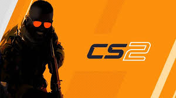

Counter-Strike 2
Counter-Strike 2 (скорочено CS2) — багатокористувацька гра в жанрі тактичного шутера від першої особи.
Counter-Strike 2 (скорочено CS2) — багатокористувацька гра в жанрі тактичного шутера від першої особи.
Rust — це багатокористувацька відеогра в жанрі симулятор виживання.
Minecraft — відеогра в жанрі пісочниці у відкритому світі з поглядом від першої/третьої особи.
Kirby Star Allies — це 2,5D платформер, у який грають з бокової перспективи. Гравці керують головним героєм серії Кірбі , якого можуть супроводжувати до трьох компаньйонів.
The Legend of Zelda — серія фентезійних відеоігор.Ігровий процес в іграх серії являє собою складну комбінацію елементів аркади, рольової гри, квеста, головоломки і, іноді, платформера і автосимулятора.